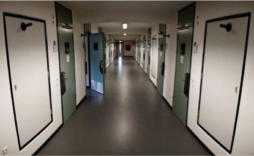

Detention Centre
The ICC Detention Centre is used to hold in safe, secure and humane custody those detained by the ICC. It is not used for enforcing sentences; convicted persons serve sentences in facilities outside of the Netherlands, in accordance with cooperation agreements between the Court and States Parties.
The Court endeavours to ensure the mental, physical and spiritual welfare of those in the Detention Centre; detainees have access to fresh air, recreational time, sports activities, library books, news and television, computers (for preparing their cases), quality food and facilities for cooking. Detainees are entitled to privacy with defence lawyers, to privileged communication with a consular or diplomatic representative, to visits a minister or spiritual advisor, and to visits with family, including a spouse or partner.
The International Committee of the Red Cross (ICRC) is the Detention Centre’s inspecting authority and as such has unrestricted access and examine, on unannounced visits, the treatment of the detained persons, their living conditions and their physical and psychological conditions, in conformity with widely accepted international standards governing the treatment of persons deprived of liberty.